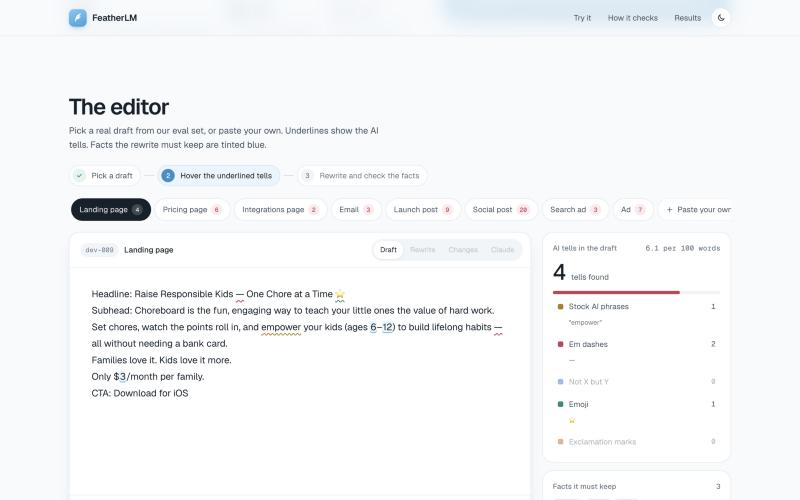
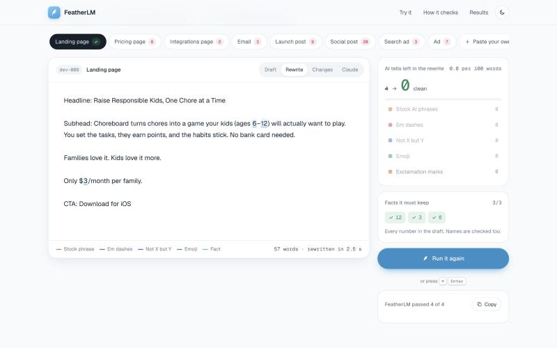
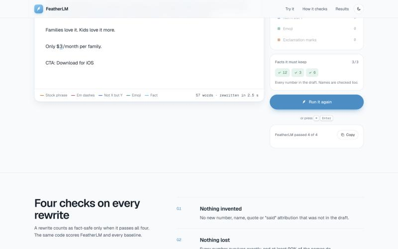

An open model (GLM-5.3 Flash on Fireworks) inside a harness that checks its own work. $0.81 per 1,000 rewrites against $9.11 for Claude Opus 5.5.
Tagline: Break Language Barriers & Unlock Nordic Markets 🌍
Tagline: Localize Your SaaS for the Baltic and Nordic Markets
Gate G2: "You dropped these names: barriers, break, hey, language, unlock."
Tagline: Break Language Barriers & Reach Nordic Markets
First comment: Hi, I'm Kristjan, founder of Linguo Labs. There are 14 of us, working across 4 countries. …
Gates G1–G4: pass, 0 failed.
Across 247 test items, Claude Opus 5.5 keeps every fact in 71% (176/247). The other 29% ship with something changed.
GLM-5.3 Flash on Fireworks rewrites the AI draft in plain prose.
G1 nothing invented · G2 nothing lost (numbers, names, quotes) · G3 no AI tells · G4 not gutted (0.7–1.3× length).
Failed check → exact instruction ("You dropped these names… put them back"). Up to 3 rounds.
Only a rewrite that passes all four counts as fact-safe.
Same checker scores FeatherLM and every baseline. Median rewrite time 3.4 s (Claude: 3.7 s).



Blind reader test live at featherlm-ab.vercel.app/round2/
| System · 247 items | Fact-safe | $ / 1k | |
|---|---|---|---|
| FeatherLM (O3c, GLM-5.3 Flash + harness) | 97% 239/247 | $0.81 | |
| Claude Opus 5.5 + our harness | 94% 231/247 | $15.85 | |
| Claude Opus 5.5 (strong prompt) | 71% 176/247 | $9.11 | |
| Claude Opus 5.5 + humanizer prompt | 60% 147/247 | $50.22 | |
| GPT-6.1 Terra | 40% 98/247 | $0.85 | |
| GLM-5.3 Flash, no harness | 27% 66/247 | $0.10 |
Out of sample, 80 real READMEs: FeatherLM 97.5% (78/80) vs Claude 76% (61/80). Δ vs Claude on 247: +26 pp [+20, +31], p<0.001 (paired bootstrap).
Strict and lenient (forgives regex artefacts). 95% CIs, paired bootstrap Δ vs Claude.
| Rewrites / month | FeatherLM | Claude Opus | Claude + harness | GPT-6.1 |
|---|---|---|---|---|
| 10k | $8 | $91 | $159 | $9 |
| 100k | $81 | $911 | $1,585 | $85 |
| 1M | $806 | $9,111 | $15,850 | $853 |
| 10M | $8,061 | $91,107 | $158,502 | $8,534 |
GPT-6.1 costs the same as us but is fact-safe only 40% of the time.
MONTHLY COST AT 1M REWRITES
broken-fact rewrites avoided per 100k vs Claude Opus 5.5 (strict: 28.7% fail vs 3.2%).
| FeatherLM preferred | 64 |
| Claude preferred | 89 |
| Both fine | 56 |
209 votes · 45 readers · sign test p = 0.052. Leaned to Claude, not significant.
qwen3p8-max, style: 44 ours / 27 Claude / 37 tie (p = 0.057)
kimi-k3, style: 33 ours / 46 Claude / 51 tie (p = 0.177)
Judges agree with human majorities on only 4/10 (kimi) and 3/10 (qwen) items.
Readers' note: ours over-uses dramatic fragments and punchy one-line closers. Claude writes calm complete sentences.
| Step | Technique | Strict | $/1k |
|---|---|---|---|
| O1 | GLM-5.3 Flash, plain | 27% | $0.10 |
| O2 | + shared system prompt | 73% | $0.31 |
| O3 | + harness: gates → targeted fix, ≤3 rounds | 93% | $0.28 |
| O3c | + prompt + style round (entry) | 97% | $0.81 |
| O3k | + claim checker, best-of-3 | 99% | $3.18 |
| E2 | Ensemble GLM + DeepSeek | 100% | $3.41 |
| R3 | Same harness on DeepSeek | 95% | n/a |
| SFT | Fireworks Training API, reverse-distilled licence-clean Common Pile data | 26.7 → 32.8 → 37.7% | — |
Training alone didn't keep facts. The checks did.
$15.85 (Claude + our harness) ÷ $0.81 (FeatherLM) per 1,000 rewrites = 19.7×.
| System | Strict [95% CI] | Δ strict vs Claude strong | Lenient | Δ lenient | $/1k |
|---|---|---|---|---|---|
| E2_ensemble_glm_deepseek | 100% [98, 100] | +28 pp [+23, +34] * | 100% [98, 100] | +15 pp [+11, +20] * | $3.41 (247/327 rows) |
| E1_ensemble | 99% [97, 100] | +28 pp [+22, +34] * | 100% [98, 100] | +15 pp [+11, +20] * | $15.12 (247/327 rows) |
| O3k_glm_calm_claimcheck_bo3 | 99% [97, 100] | +28 pp [+22, +34] * | 100% [99, 100] | +15 pp [+11, +20] * | $3.18 |
| O3l_glm_style_claimcheck_bo3 | 98% [96, 100] | +27 pp [+21, +33] * | 100% [99, 100] | +15 pp [+11, +20] * | $3.06 |
| O3j_glm_bestof3_judged | 98% [95, 99] | +27 pp [+21, +32] * | 99% [96, 100] | +14 pp [+10, +19] * | $2.61 |
| O3m_glm_plainclaim | 97% [94, 99] | +26 pp [+20, +32] * | 99% [97, 100] | +15 pp [+10, +19] * | $0.91 |
| O3t_glm_ali_taste | 97% [94, 99] | +26 pp [+21, +32] * | 100% [98, 100] | +15 pp [+11, +20] * | $0.89 |
| O3c_glm_prompt_harness_style | 97% [94, 99] | +26 pp [+20, +31] * | 98% [95, 99] | +13 pp [+9, +18] * | $0.81 |
| O3e_glm_harness_cliche | 96% [93, 98] | +25 pp [+19, +31] * | 99% [96, 100] | +14 pp [+10, +19] * | $0.81 |
| O3f_glm_calm | 96% [92, 98] | +24 pp [+19, +30] * | 98% [96, 100] | +14 pp [+9, +18] * | $0.93 |
| O3d_glm_harness_anticopy | 95% [92, 97] | +24 pp [+18, +30] * | 98% [95, 99] | +13 pp [+8, +18] * | $0.85 |
| O3n_glm_frame | 95% [92, 97] | +24 pp [+18, +30] * | 96% [93, 98] | +12 pp [+8, +16] * | $0.95 |
| R3_deepseek_harness | 95% [91, 97] | +23 pp [+18, +29] * | 99% [96, 100] | +14 pp [+10, +19] * | n/a |
| O3b_glm_prompt_harness | 94% [91, 97] | +23 pp [+17, +29] * | 97% [94, 99] | +12 pp [+7, +17] * | $0.54 |
| R3t_deepseek_ali_taste | 94% [91, 97] | +23 pp [+18, +29] * | 98% [95, 99] | +13 pp [+9, +17] * | n/a |
| F1H_opus_harness | 94% [90, 96] | +22 pp [+17, +28] * | 97% [94, 99] | +13 pp [+8, +17] * | $15.85 |
| O3_glm_harness | 93% [89, 96] | +21 pp [+16, +27] * | 97% [94, 99] | +12 pp [+7, +17] * | $0.28 |
| O3g_glm_calm_retrieval_claimcheck | 92% [88, 95] | +21 pp [+15, +27] * | 97% [94, 99] | +13 pp [+8, +17] * | $1.42 |
| O2_glm_prompt | 73% [67, 79] | +2 pp [-4, +9], n.s. (p=0.535) | 80% [74, 85] | -5 pp [-10, +0], n.s. (p=0.081) | $0.31 |
| frontier-strong:claude-opus-5-5 | 71% [65, 77] | reference | 85% [80, 89] | reference | $9.11 |
| F1h_opus_humanizer | 60% [53, 66] | -12 pp [-17, -6] * | 77% [71, 82] | -8 pp [-13, -3], sig. (p=0.001) | $50.22 |
| O2h_glm_humanizer | 53% [46, 59] | -19 pp [-26, -11] * | 63% [56, 69] | -22 pp [-28, -15] * | $1.15 |
| frontier-live:claude-opus-5-5 | 53% [46, 59] | -19 pp [-24, -13] * | 77% [71, 82] | -8 pp [-13, -3], sig. (p=0.003) | $7.17 |
| F2h_gpt61_humanizer | 51% [45, 57] | -20 pp [-27, -13] * | 56% [50, 63] | -28 pp [-35, -22] * | $7.73 |
| F2_gpt61_terra | 40% [34, 46] | -32 pp [-39, -24] * | 44% [38, 51] | -40 pp [-47, -34] * | $0.85 |
| O4c_glm_sft_clean | 38% [32, 44] | -34 pp [-41, -26] * | 43% [36, 49] | -42 pp [-49, -35] * | n/a |
| O4m_glm_sft_modern | 33% [27, 39] | -38 pp [-46, -31] * | 41% [35, 47] | -44 pp [-51, -37] * | n/a |
| X0_copy_draft (no rewrite: control) | 32% [26, 38] | -40 pp [-47, -32] * | 32% [26, 38] | -53 pp [-60, -46] * | n/a |
| O1_glm_base | 27% [21, 33] | -45 pp [-52, -37] * | 30% [24, 36] | -55 pp [-62, -49] * | $0.10 |
| frontier-persona-preexisting (130 items) | 12% [7, 19] | -57 pp [-66, -48] * | 16% [10, 24] | -66 pp [-74, -58] * | n/a |
| L2h_qwen3_4b_dpo_harness (100 items) | 8% [4, 15] | -61 pp [-71, -50] * | 9% [4, 16] | -73 pp [-82, -64] * | n/a |
* significant (p=0.000, paired bootstrap). Missing rows count as fails. Source: hackathon/report/HEADLINE.md ← results.json.
| System | All 247 | Held-out 117 | Held-out clean 96 | Real READMEs 80 |
|---|---|---|---|---|
| O3c_glm_prompt_harness_style | 96.8% 239/247 | 98.3% 115/117 | 99.0% 95/96 | 97.5% 78/80 |
| E2_ensemble_glm_deepseek | 99.6% 246/247 | 99.1% 116/117 | 99.0% 95/96 | 98.8% 79/80 |
| O3k_glm_calm_claimcheck_bo3 | 99.2% 245/247 | 99.1% 116/117 | 99.0% 95/96 | 98.8% 79/80 |
| F1H_opus_harness | 93.5% 231/247 | 94.9% 111/117 | 95.8% 92/96 | 97.5% 78/80 |
| frontier-strong:claude-opus-5-5 | 71.3% 176/247 | 73.5% 86/117 | 71.9% 69/96 | 76.2% 61/80 |
| frontier-live:claude-opus-5-5 | 52.6% 130/247 | 65.8% 77/117 | 64.6% 62/96 | — |
| F1h_opus_humanizer | 59.5% 147/247 | 65.8% 77/117 | 61.5% 59/96 | — |
| F2h_gpt61_humanizer | 51.0% 126/247 | 67.5% 79/117 | 65.6% 63/96 | — |
| F2_gpt61_terra | 39.7% 98/247 | 61.5% 72/117 | 59.4% 57/96 | — |
| O4c_glm_sft_clean | 37.7% 93/247 | 56.4% 66/117 | 62.5% 60/96 | — |
| O4m_glm_sft_modern | 32.8% 81/247 | 49.6% 58/117 | 51.0% 49/96 | — |
| X0_copy_draft (no rewrite: control) | 31.6% 78/247 | 56.4% 66/117 | 53.1% 51/96 | — |
| O1_glm_base | 26.7% 66/247 | 39.3% 46/117 | 33.3% 32/96 | — |
Held-out = real human originals never used in tuning; "clean" drops items flagged in heldout_excluded.json / train overlap. — = system not run on that block. Source: results.json blocks.
| Judge | Overall ours/Claude/tie | Style ours/Claude/tie |
|---|---|---|
| Qwen 3.8 Max | 39/43/25 (p=0.741) | 44/27/37 (p=0.057) |
| Kimi K3 | 35/52/43 (p=0.086) | 33/46/51 (p=0.177) |
Judge vs human majority (17 items): Kimi agrees 4 / disagrees 6; Qwen 3 / 7. Judges' style verdicts are not validated against readers.
| System | Kimi fooled / or-split | Qwen fooled / or-split |
|---|---|---|
| FeatherLM O3c | 0/117 · 27% | 1/117 · 42% |
| Claude strong | 0/117 · 24% | 0/117 · 34% |
| Claude + harness | 0/117 · 21% | 0/117 · 37% |
| GLM base | 0/117 · 23% | 0/117 · 27% |
| Draft copied (control) | 0/117 · 14% | 0/117 · 13% |
Neither judge reliably picks any rewrite over the real human text.
| Signal | Verdict | Evidence |
|---|---|---|
| Gate fairness | harness wins | Gap to best frontier +21 pp; after forgiving regex artefacts still +11 pp (97% vs 85%) |
| Copying the draft | partly gaming | Harness (O3) near-copies 10% (Claude strong 1%); identical 0%; GLM base without loop 7% |
| Dropping sentences | harness wins vs Claude | Deleted-sentence rate 3.3% vs Claude strong −9.38 pp [−11.55, −7.45]; tie vs GPT-6.1 |
| Artefacts | harness wins | Artefact share 1%; trailing numbers 0%; repeats 0% |
| Hold-out tells | mixed | In-band share 68.1%; vs Claude strong −4.23 pp (worse); human originals 87.5% |
| What the loop adds | disclosed | First-draft pass 23% → final 93% (O3); loops 0/1/2/3 = 57/105/61/27 |
"The fair number to quote is the lenient one" (AUDIT.md): lenient 98% vs Claude 85%. Do-nothing control (copy the draft) scores 32% strict.
| Run | What | Result (strict, 247) |
|---|---|---|
| Base | GLM-5.3 Flash, no harness (O1) | 26.7% |
| SFT B (O4m) | Serverless LoRA, licence-clean reverse-distilled pairs; loss 1.144 → 0.699 (last-10 mean) | 32.8% |
| SFT C (O4c) | Same recipe, gate-clean data; valid loss 1.116 → 0.752 (ppl 3.05 → 2.12) | 37.7% |
| DPO → human refs (O7) | 800 pairs, warm start from SFT B; serverless reference sampler hung at step 1 | no model |
| Local DPO (L2, Qwen3 4B, MLX) | DPO toward real human writing on top of L1; loss saturates in ~20 steps | 8% (100 items, with harness) |
| DPO-RLAIF (O6) | 66 AI-labelled pairs + script prepared | not trained |
SFT v1 (O4) trained but not evaluated (LoRA serving needed an on-demand deployment). Training lifts the open model, but not near the harness: the checks keep the facts.